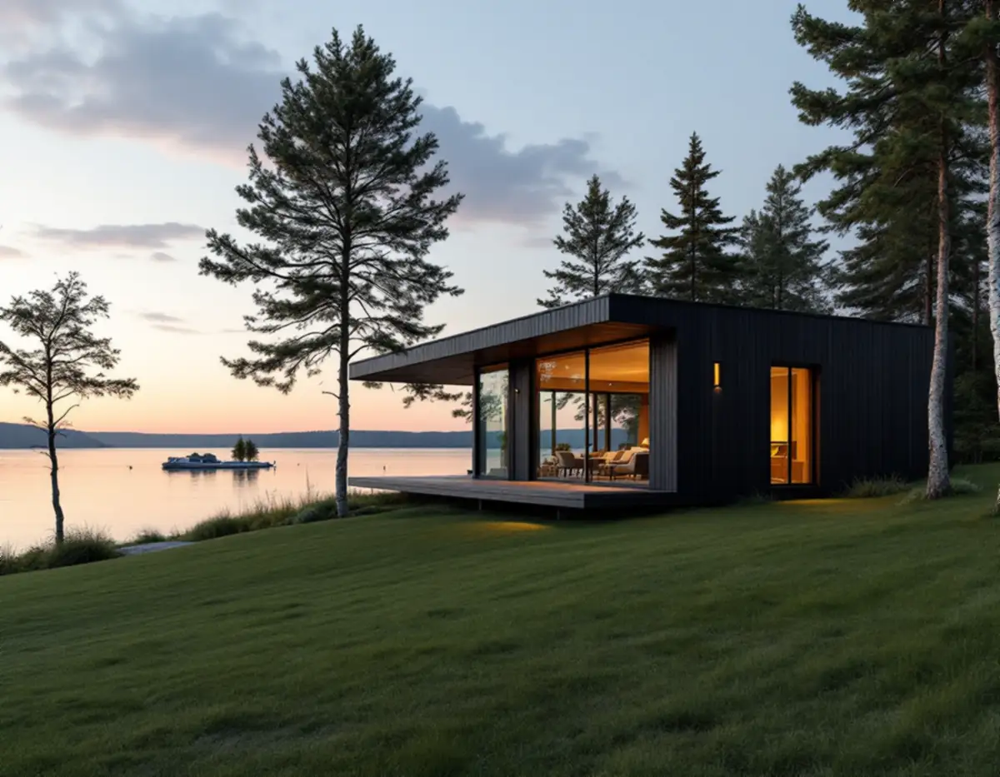
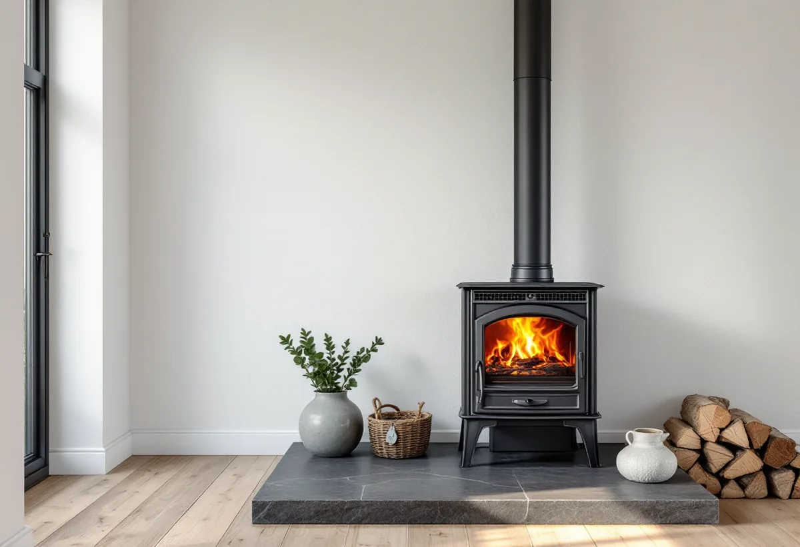
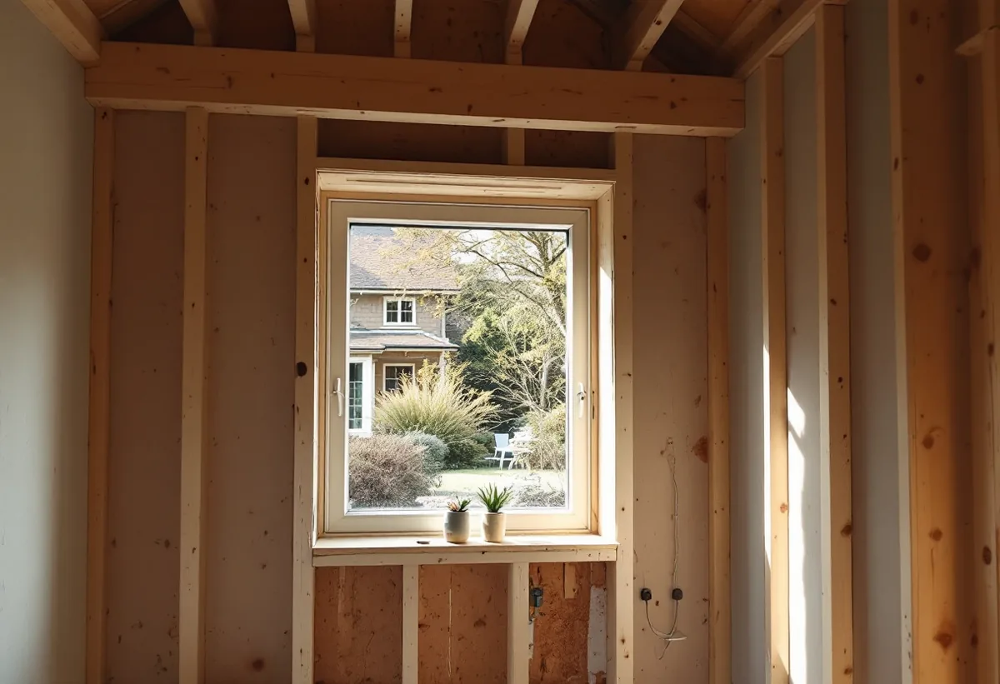

Platsbesök
Vi går igenom huset, skorstenen och var fönstren kan bli större.
När ett hus på Ekerö totalrenoveras vill många ha en braskamin i vardagsrummet och större fönster mot sjön. Geal Entreprenad AB totalrenoverar villor på Ekerö och tar med eldstaden och fönstren i anmälan från början.

Ekerö kommuns kulturmiljöprogram berättar att kommunen har fördubblat sin befolkning sedan 1970, och att villabebyggelsen ökat kraftigt. Kring östra Ekerö och södra Färingsö dominerar småhus från 1900-talets andra hälft, och under 1990- och 2000-talet tillkom inte mindre än 2 475 villor.
Programmet nämner också att fritidshus permanentas i snabb takt. Många av husen som renoveras i dag är alltså byggda för en annan tid och ett annat sätt att bo, och en totalrenovering handlar ofta om att anpassa dem till helårsboende med dagens krav.

Kommunen skriver att du ska göra en anmälan till bygglovsenheten om du vill installera eller göra en större ändring av en eldstad, braskamin, öppen spis eller kakelugn. Det gäller också om du vill installera eller byta ut en spisinsats i en befintlig öppen spis, och om du byter bränsle i din eldstad.
I en totalrenovering är det lätt att eldstaden hamnar sist i planeringen. Vi tar med den i samma anmälan som övriga ändringar, så att skorsten, bjälklag och brandskydd planeras tillsammans med resten av huset.
Enligt kommunen ska anmälan innehålla en planritning med eldstadens placering, en fasadritning med skorstenen eller rökkanalen inritad, en kontrollplan och typgodkännande, produktbeskrivning eller CE-märkning.
När installationen är klar ska du skicka in ett sotarintyg, den ifyllda kontrollplanen och en ansökan om slutbesked. Vi samlar handlingarna under arbetet, så att eldstaden kan tas i bruk när slutbeskedet finns.
Kommunen skriver att du behöver göra en anmälan om du gör förändringar som väsentligt påverkar brandskydd eller bärande konstruktion, och ger nya reglar för ett större fönster som exempel. Kräver åtgärden ändå bygglov hanteras allt i samma ansökan.
Ett större fönster mot sjön betyder ofta att en del av ytterväggen måste bära på ett nytt sätt. Vi låter en konstruktör dimensionera öppningen och tar med den i anmälan. Samtidigt ser vi över hur det större fönstret påverkar värmen och solinstrålningen i rummet. Om fönsterbyte i övrigt kan du läsa under fönsterbyte på Ekerö.
Ekerö kommun har gjort en ny bedömning av sina särskilt värdefulla byggnader och områden efter ändringarna i plan- och bygglagen, och visar resultatet som undantagsområden i Ekerökartan. Kommunen skriver att det ofta beror på var fastigheten ligger om du kan åberopa ändringarna.
Ligger huset i ett sådant område kan fasadändringar som större fönster kräva bygglov. Ska huset anslutas till kommunalt vatten och avlopp skickar du en anmälan till Roslagsvatten i god tid före byggstart. Om badrum och kök kan du läsa under badrumsrenovering på Ekerö.

Vi går igenom huset, skorstenen och var fönstren kan bli större.
Vi kontrollerar om fastigheten ligger i ett undantagsområde.
Eldstad, bärande ändringar och kontrollplan i samma ärende.
Varje del och varje moment står för sig.
Arbetet startar när startbeskedet finns.
Sotarintyg och kontrollplan lämnas till kommunen.
För ett småhus räknar Skatteverket bland annat att riva väggar och bygga om planlösningen, arbeta med tilläggsisolering, sätta kakel och klinker och göra förbättringsarbeten som rotarbete.
Avdraget är högst 30 procent av arbetskostnaden och högst 50 000 kronor per person och år, och äger ni huset två kan båda göra avdrag. Material och resor ger inget avdrag. Geal drar av beloppet direkt på fakturan.
Husets storlek och skick, nya öppningar i bärande väggar, eldstaden och skorstenen, el och VVS och vilka ytskikt du väljer. Läs mer under villarenovering. Efter ett gratis platsbesök får du ett skriftligt kostnadsförslag.
Renovera hela huset eller lägenheten.
Villarenovering →Takbyte, takbesiktning och plåtarbeten.
Takläggare på Ekerö →Stenhamra, Kungshatt och Adelsö.
Takrenovering på Ekerö →Utanför plan, strandskydd och eget avlopp.
Attefallshus på Ekerö →Anmälan, mjukt vatten och eget avlopp.
Badrumsrenovering på Ekerö →Nytt hus, vattenskydd och bergvärme.
Byggföretag på Ekerö →Väder, säsong och torktider på öarna.
Fasadmålning på Ekerö →Egnahem, villaområden och äldre gårdar på Ekerö.
Fasadrenovering på Ekerö →Sommarvillor och 60-talsvillor på Ekerö.
Fönsterbyte på Ekerö →Erskines centrum och villorna.
Fönsterrenovering på Ekerö →Villor i Stenhamra och omgjorda sommarhus.
Golvläggare på Ekerö →Slipa trägolv som ligger på golvvärme.
Golvslipning på Ekerö →Vedspis, egen brunn och nya sopsorteringen.
Köksrenovering på Ekerö →Sommarvillor, stugor och villor på Mälaröarna.
Målare på Ekerö →Takvatten, solceller och plåttak på Ekerö.
Plåtslagare på Ekerö →Altan, gäststuga och snickeri nära Mälaren.
Snickare på Ekerö →Kartan, solcellerna och skorstenen.
Takbyte på Ekerö →Tapet på timmer, papp och skivor.
Tapetsering på Ekerö →Kartan, inglasningen och registret.
Tillbyggnad på Ekerö →